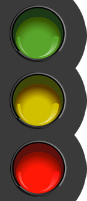

VOLCANES
Caída de ceniza
RECOMENDACIONES EN CASO DE CAÍDA DE CENIZA VOLCÁNICA
• No humedecer la ceniza a fin de evitar taponamientos en el sistema de alcantarillado• Mantén la calma.
• Utiliza medios electrónicos y de comunicación para obtener información confiable que den las autoridades de Protección Civil sobre la caída de ceniza y atiende siempre sus instrucciones.
• No realices actividades al aire libre y si es posible no salgas.
• Cierra puertas y ventanas y coloca toallas o trapos húmedos en las rendijas.
• Si tienes que salir cúbrete con un pañuelo o tapabocas, limpia ojos y garganta con agua pura.
• Para los ojos, usa lentes protectores, especialmente si usas lentes de contacto.
• Ten a la mano una linterna y pilas.
• La ceniza volcánica puede ser resbaladiza, sobre todo cuando está mojada. Toma las precauciones necesarias.
• Cubre tinacos, cisternas y depósitos de agua.
• Barre y retira la ceniza de techos, azoteas, patios y calles, deposítalas en bolsas y no permitas que se vaya al drenaje.
• Si es posible no conduzcas, si tienes que hacerlo, hazlo a baja velocidad y con las luces encendidas, ya que la ceniza dificulta la visibilidad y provoca que el pavimento se vuelva resbaloso.
• Ante la caída de ceniza volcánica evita consumir alimentos en la vía pública.
• Si permaneces expuesto por algún tiempo a las cenizas volcánicas, al ingresar a tu casa se recomienda cambiar de ropa.
• Durante la caída de ceniza volcánica, evita que los menores realicen actividades al aire libre.
• Mantén a tus mascotas en un lugar techado al igual que sus alimentos. Si tus macotas salen, cepíllalos antes de permitirles la entrada nuevamente.
• La ceniza puede ser usada para parques, jardines, macetas o tierras de cultivo, ya que es rica en minerales.
• No repitas ni difundas rumores. La ciudad de Puebla se encuentra a una distancia segura, no intentes salir.
• Usa las vías de comunicación solo en caso de ser necesario.
Medidas de Prevención
Consejos de seguridad:

Semáforo de alerta volcánica

El "Semáforo de Alerta Volcánica"
Sirve para informar a la población sobre la actividad del volcán y las medidas de prevención de cada etapa.Verde (normalidad)
Verde Fase 1.- El volcán está en calma.
VerdeFase 2.- El volcán presenta fumarolas; actividad sísmica local.
Amarillo (alerta). Permanece atento a la información oficial.
Amarillo Fase 1.- Sismicidad volcánica local frecuente, fumarolas de vapor o gas, emisiones ligeras de ceniza alrededor del volcán.
Amarillo Fase 2.- Actividad explosiva de escala baja a intermedia, lluvias de ceniza leves a moderadas en poblaciones cercanas, posibilidad de flujos piroclásticos y flujos de lodo de corto alcance.
Amarillo Fase 3.- Actividad explosiva de escala intermedia a alta, explosiones de intensidad crecientes, lluvias de cenizas notorias sobre poblaciones cercanas.
Rojo (alarma). Sigue las instrucciones de las autoridades.
Rojo Fase 1.- Actividad explosiva de escala intermedia a grande, explosiones que pueden lanzar fragmentos de material volcánico, flujos piroclásticos y lodos que pueden alcanzar poblaciones cercanas e intermedias, lluvias de cenizas importantes en poblaciones y ciudades lejanas.
Rojo Fase 2.-Actividad explosiva de escala grande a extrema, flujos masivos piroclásticos o de escombros, columnas eruptivas de gran alcance y posibles derrumbes del edificio volcánico, lluvias intensas de ceniza, arena y fragmentos sobre poblaciones a distancias mayores, grandes lahares de efectos desastrosos.